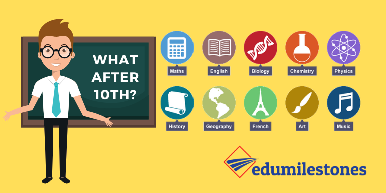

“What would you attempt to do if you knew you would not fail?” Dr. Robert Schuller
So here the top 5 career options after passing class 10:
1. Science:
Science offers many career options such as engineering, medical and research roles. It is the most favourite career option for parents and students.
The major advantage of science is, after class 12th you can switch from science to commerce or science to arts. There are multiple career options available for the science stream after class 12th.
2. Commerce:
Commerce is the second most popular career option after science. Commerce is best for Business. If you are fascinated by numbers, finances, and economics then commerce is for you.
It offers a wider variety of carrier options such as Chartered Accountant, MBA, investment in banking sectors. You must be familiar with Accountancy, Finances, and Economics.
3. Arts/Humanities:
Arts/ Humanities are of those who are interested in academic research. If you are creative and want to dive deep into Humanity, then arts is the stream for you. History, Political Science, Geography are the core subjects for Arts Students.
Arts now offers an array of career alternating which are equally rewarding as the ones offered by Science and Commerce.
4. ITI (Industrial Training Institute):
They are training centers that provide courses to students seeking easy employment just after completing school. ITI courses are great opportunities for students who wish to complete any technical course within a short period.
By completing a course in ITI, the student is now trained in Industrial skills and can earn a living by working in the same field.
5.Polytechnic courses:
After class 10th, students can go for polytechnic courses like Mechanical, Civil, Chemical, Computer, Automobile. These colleges offer diploma courses for 3 years, 2 years and 1 year. Cost-effectiveness, jobs within a short time duration are the advantages of diploma courses after 10th.